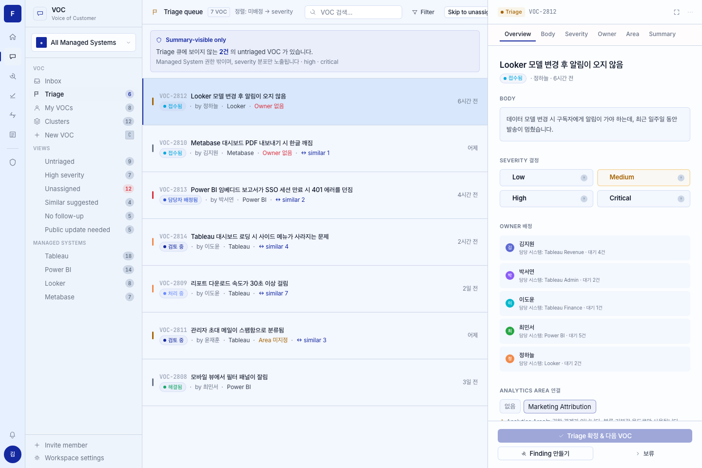
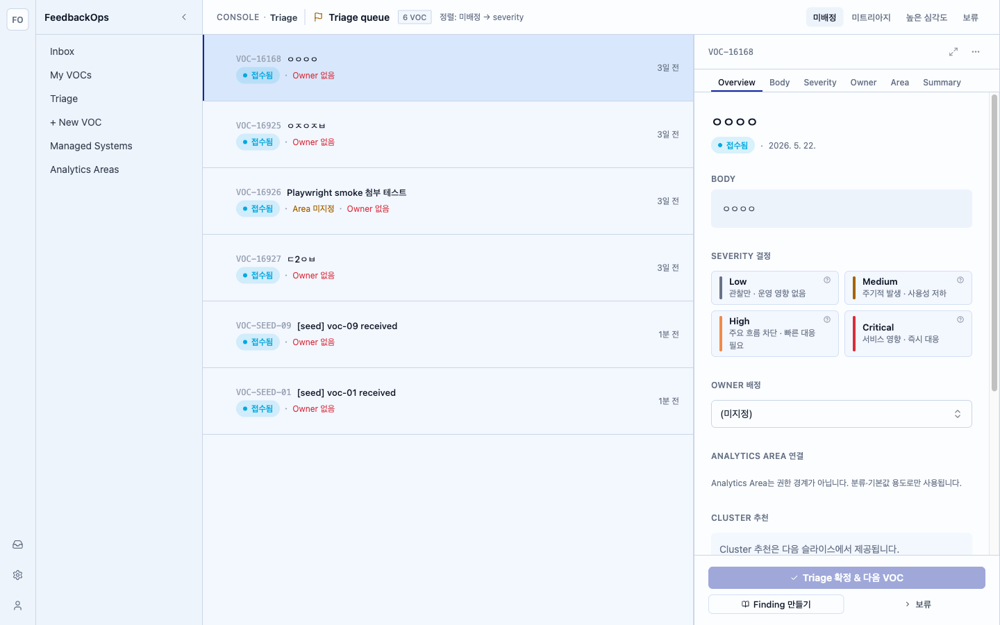

intentional-per-ADR-0022 and is NOT a blocker.

docs/design-prototype/screenshots/final-baselines/voc-triage-console.png (canonical per ADR-0020 §3). Prototype-era palette + prototype toolbar (Search / Filter / Skip to unassigned + "N건 처리됨").
| Region | Category | Prototype | Impl | Severity | Resolution |
|---|---|---|---|---|---|
| toolbar.right-cluster | chrome | SearchInput ("VOC 검색…") + Filter ghost button + "Skip to unassigned" secondary button |
4-tab strip: 미배정 / 미트리아지 / 높은 심각도 / 보류 + URL tab param |
LOW | intentional-per-ADR-0022 (deliberate built feature; deviation documented; not a HIGH blocker per ADR) |
| toolbar.processed-count | copy | "· N건 처리됨" emerald progress text (L652-656) | "· N건 처리됨" rendered in text-text-success (emerald) after sort hint; verified live ("· 1건 처리됨" appears after a confirm, "5 VOC" count decrements) |
LOW | fix-now ✓ (added this PR; copy matches verbatim) |
| global.palette | token | Prototype capture uses the pre-Pack-17 darker chrome (baseline PNG predates the light refresh) | Pack 17 Samsung-light canvas #f3f7fe / sidebar #eef4fb per ADR-0021 |
LOW | intentional-per-ADR-0021 (light theme is the only MVP theme; baseline PNG is a historical dark capture, not a token contract) |
| panel.header.actions | interaction-affordance | expand + more ghost icon buttons (L423-426) | expand (Maximize2) + more (MoreHorizontal) ghost icon buttons rendered, currently disabled (no behavior yet) |
LOW | defer-with-note (affordance present + matches prototype; wiring fullscreen/overflow menu is a follow-up — buttons are disabled no-ops) |
| Region | Note |
|---|---|
| toolbar.identity | "CONSOLE · Triage" kicker + flag icon + "Triage queue" + "N VOC" badge + "정렬: 미배정 → severity" sort hint. 50px inner-toolbar rhythm preserved (ADR-0020 §2 / §Amendment). |
| queue.rows | severity indicator + VOC id + title + reporter-status badge + meta (Area 미지정 / Owner 없음) + created-at trailing. Mirrors TriageQueueRow (L363-391). |
| panel.severity-picker | 4 chips, 3-col grid 4px 1fr auto with inline HelpTip (?) icon per chip; tooltip scoped to the icon. Restored this PR (was 2-col + whole-chip tooltip). |
| panel.owner / panel.area / panel.cluster | Owner combobox (>5 actors, D-2.3), AA picker dropdown, cluster read-only stub (#21) — all confirmed intentional, left as-is. |
| panel.summary.reporter-status-row | "Reporter status 변경" row added this PR: 접수됨 → 검토 중 (received → reviewing with no owner). Verified live. |
| panel.footer | "Triage 확정 & 다음 VOC" primary + "Finding 만들기" + "보류" — copy verbatim. |
| Region | Prototype | Blocker |
|---|---|---|
| panel.body-card | renders {voc.description} (L441) |
VocListItem (triage list payload) carries only title, not description. Renders title until description is sourced (add to list-item read schema or per-VOC detail fetch). Deferred — see code comment in TriagePanel.tsx body section. |
| panel.overview.meta | "· {reporter.name} · {createdAt}" (L434) | VocListItem exposes only reporter_id (UUID), no reporter display name. Renders status badge + date only. Wiring reporter name requires an actor-name join on the list payload. Deferred. |